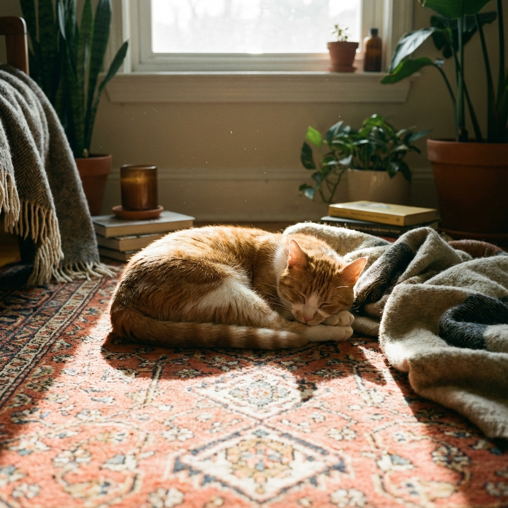

「足りない」に縛られた社会
成果も肩書きも更新されていくのに、心は軽くならない。もっと頑張れ、もっと取りに行けという声ばかりを浴びて、私たちはいつの間にか自分を削っています。気づけば会議もアルゴリズムも「不足の穴埋め」ばかり。それでも安心感は遠いままです。
視点を変えると、景色が変わる
ないものを数える癖を一度手放し、いまある呼吸や仲間、積み重ねた経験を静かに数えてみる。そこに感謝が芽生えた瞬間、次の一歩は自然と前向きになります。これがスデニアルの起点です。
ないものを追いかけて走り続けた足を一度とめてみると、すでにいくつもの光が宿っていることに気づく。その瞬間、未来は「取りに行くもの」から「共にひらくもの」に姿を変える。
スデニアルの由来と背景
スデニアル（Sudeniaru）は「すでにある」という言葉の響きをそのまま抱いた名前です。創業メンバーは成果主義の荒波の中で、「勝つため」ではなく「分かち合うため」のプロジェクトを描きました。手のひらに射す朝の光をシンボルに、感謝を起点とする連鎖をデザインします。
モットーは Already Enough, Yet Open. もう十分ある、でもまだひらける。その余白にこそ、人に寄り添う技術と物語が宿ると信じています。
人に寄り添う新しいマーケティング
奪うのではなく、共に味わうマーケティングへ。AIやテクノロジーは主役ではなく、人肌を忘れない伴走役です。問いを設計し、気づきを受け取り、感謝を交換する。そんな体験を丁寧に編むことで、価値は静かに膨らみます。
- Presence：まずはその場にいる。数字よりも息づかいを聴く。
- Sensing：感情とデータを往復し、本音をすくい上げる。
- Sharing：出会った光を分かち合い、連鎖を描く。
- Gentle Tech：人肌を忘れない技術を選ぶ。
私たちがそっとできること
- 本音を受けとめるリスニングと問いの設計
- 感情とデータを往復するナラティブデザイン
- 小さな体験を積み重ねるコミュニティ設計
- 共に歩むプロトタイプ（PoC）の同伴
- 余白を生むマイクロコンテンツや往復書簡
こんな人とつながりたい
- 真面目に働いてきたけれど、どこか満たされない個人の方
- 数字だけではなく、人の息づかいを信じたい経営・人事の方
- AIを愛しつつ、人間味を手放したくない共犯者
- 小さな実験から始めたい、静かな変化を望む仲間
想定できる導線
- 「あなたの物語を聞かせてください」というフォームでの往復書簡
- 少人数のオンライン対話会や手紙型メルマガへの招待
- PoC・共創プロジェクトの相談、静かな実験の同伴
静かな招待
もし「ある」に寄り添う感覚にうなずけたなら、あなたの物語を聞かせてください。お問い合わせやPoCの相談、メルマガでの往復書簡など、無理のない形でかまいません。スデニアルは、感謝を起点に前向きな連鎖を共に育ててくださる仲間をお待ちしています。
余白メモ：今のあなたにとって「すでにある」と言えるものを、ひと言だけ書き留めてみませんか。
